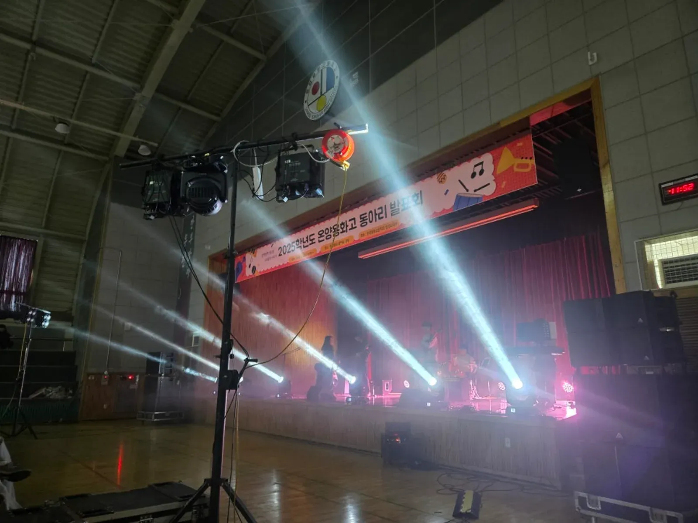
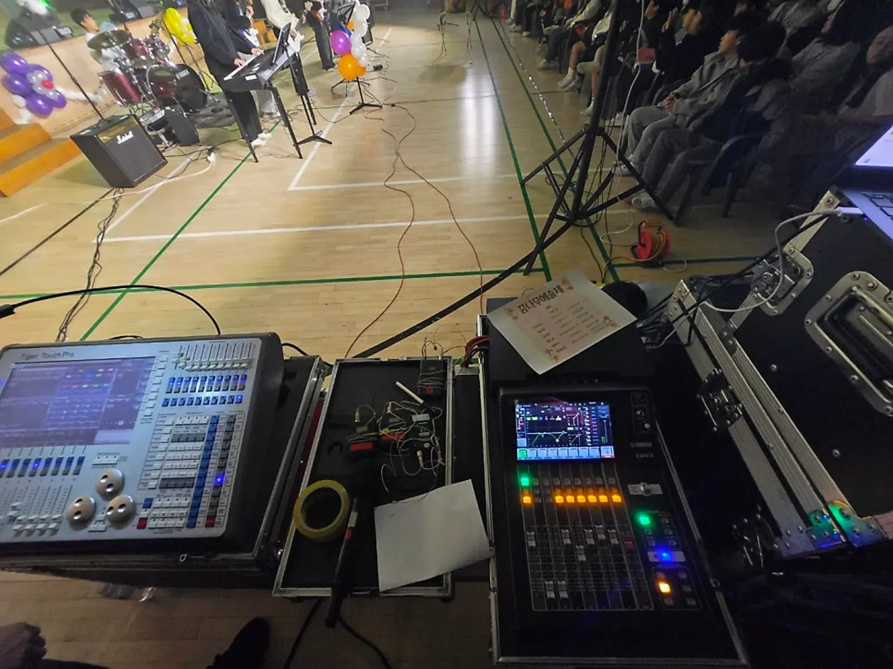
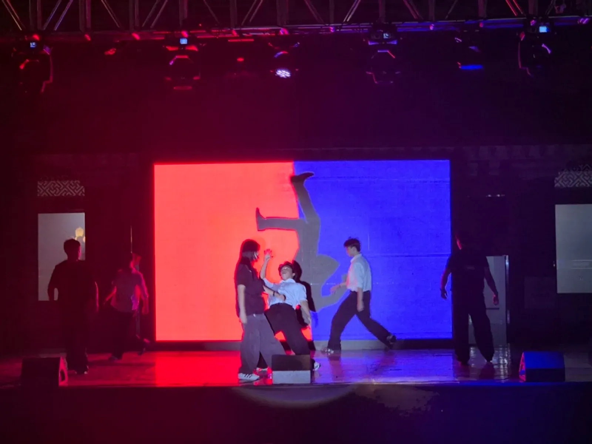

예산 행사 준비 · 2026년 10월 28일
예산 학교축제 음향 조명 — 체육관 공연 준비하기
예산 학교축제 음향 조명은 체육관이 공연장이 아니라는 점에서 출발해야 합니다. 출력이 큰 스피커만 놓으면 소리가 울려 객석 끝까지 고르게 가지 않고, 밴드 공연은 무대 위 학생들이 서로의 소리를 못 들어 박자가 흔들립니다. 예산은 아산 탕정 본사에서 예산군청까지 차로 약 35분 거리이고, 행사ON은 예산고등학교 체육대회 · 학교축제에서 음향 · 조명 · 천막 · 테이블 · 의자를 맡았습니다.

- 체육관은 소리가 울리므로 스피커 수와 방향으로 객석을 고르게 채웁니다.
- 밴드 공연은 객석 스피커만큼 무대 위 모니터 스피커가 중요합니다.
- 조명은 무대 앞과 양쪽에 두고, 순서마다 분위기를 바꿀 수 있게 콘솔로 운영합니다.
- 리허설은 팀별로 짧게라도 꼭 하고, 마이크 · 악기 순서를 큐시트에 적습니다.
- 예산은 아산 탕정 본사에서 차로 약 35분이라 리허설 전에 설치를 마칠 수 있습니다.
1. 체육관은 소리가 울리는 공간입니다
학교 체육관은 운동을 위해 지은 공간이라 벽과 천장이 단단하고 넓습니다. 이런 곳에서는 소리가 여러 번 튕겨 울리기 때문에, 볼륨을 올릴수록 말소리가 뭉개집니다. 그래서 행사ON은 도착하면 무대와 객석 위치, 공연 공간을 먼저 보고 스피커 위치를 정합니다.
| 문제 | 해결 방향 |
|---|---|
| 뒷줄이 안 들림 | 출력을 올리기보다 스피커를 높이 세워 뒤쪽을 향하게 |
| 말소리가 웅웅거림 | 저음을 줄이고 스피커를 벽에서 띄워 놓기 |
| 앞줄만 시끄러움 | 무대 양옆 스피커 각도를 객석 가운데로 |
| 삐 소리(하울링) | 마이크가 스피커 앞으로 가지 않게 동선 정하기 |
2. 예산 학교축제 음향 조명, 밴드는 모니터가 핵심
중 · 고등학교 축제에는 밴드 공연이 자주 들어갑니다. 밴드 공연은 객석으로 나가는 소리만큼 무대 위 모니터가 중요합니다. 보컬과 연주자가 서로의 소리를 들어야 박자와 음정이 맞기 때문입니다. 공연 중에는 기타 · 베이스 · 드럼 · 키보드 사이에서 보컬이 묻히지 않도록 운영자가 계속 균형을 맞춥니다.

- 드럼 앞에는 드럼 소리가 보컬 마이크로 너무 많이 들어가지 않게 거리를 둡니다.
- 기타 · 베이스 앰프 방향은 객석이 아니라 연주자 쪽을 보게 두면 무대 소리가 덜 섞입니다.
- 무선마이크는 팀마다 이름표를 붙여 순서대로 놓아 둡니다.
3. 조명은 무대 앞과 양쪽에
체육관 천장 조명만으로는 무대가 밋밋합니다. 무대 앞과 양쪽에 조명을 세우면 평소 체육활동을 하던 공간이 축제 무대로 바뀝니다. 보컬 공연은 출연자에게 시선이 모이게, 댄스 공연은 색을 강하게 쓰는 식으로 순서마다 조명을 바꿉니다.

4. 리허설과 큐시트
축제 당일 문제는 대부분 리허설을 건너뛴 순서에서 생깁니다. 팀별로 5분이라도 무대에 올라 마이크 높이와 모니터 소리를 맞춰 보는 것이 좋습니다. 리허설을 하면서 순서마다 필요한 것을 큐시트에 적어 운영자와 선생님이 같은 종이를 봅니다.
| 큐시트 칸 | 적을 것 |
|---|---|
| 순서 · 팀 이름 | 공연 순서대로 |
| 마이크 | 보컬 수, 악기 마이크 |
| 음원 | 파일 이름, 시작 시점 |
| 조명 | 분위기(밝게 · 색 강하게 · 차분하게) |
| 무대 전환 | 악기 옮기는 시간, 담당 학생 |
5. 예산 학교축제 견적 항목표
학교축제 음향 조명 견적에 들어가는 항목입니다. 자동 견적서에서 골라 문의하시면 체육관 크기와 공연 구성에 맞춰 구성과 견적을 정리해 드립니다. 금액은 규모 · 장소 · 일정에 따라 상담 후 안내합니다.
| 항목 | 확인할 것 |
|---|---|
| 학교축제 음향 · 조명 | 공연 팀 수, 체육관 · 강당 크기 |
| 밴드 공연 추가 구성 | 밴드 팀 수, 악기 구성 |
| 현장 오퍼레이터 | 리허설 · 본공연 시간 |
| 조명 | 무대 앞 · 양쪽 조명, 무빙 조명 |
| 캐노피 천막 · 테이블 · 의자 | 야외 부스가 있을 때 |
예산 지역 안내는 예산 행사 안내에, 체육관 공연 음향 기록은 온양용화고 동아리 발표회 이야기에 있습니다. 초등학교 예술제는 공주 학예발표회 글을 참고하세요.
자주 묻는 질문
강당이 작아도 장비가 많이 필요한가요?
공간과 공연 구성에 맞춰 정합니다. 강당 크기와 공연 팀 구성을 알려 주시면 그에 맞는 구성을 제안합니다.
학생이 직접 음향을 만져도 되나요?
공연 중 운영은 현장 오퍼레이터가 맡습니다. 방송부 학생이 함께하고 싶다면 리허설 때 역할을 나눠 정할 수 있습니다.
체육대회와 축제를 같이 맡길 수 있나요?
체육대회의 천막 · 음향과 축제의 음향 · 조명을 함께 상담할 수 있습니다. 두 행사 날짜를 같이 알려 주세요.
행사 날짜가 정해지셨나요?
날짜 · 장소 · 인원만 알려 주시면 구성과 견적을 정리해 드립니다. 상담은 24시간 받습니다.